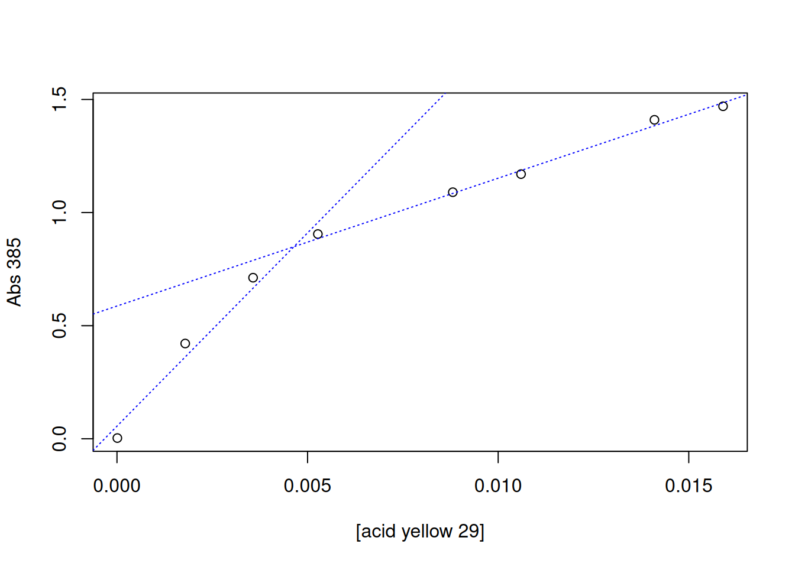

Critical micelle concentration refers to the minimum surfactant content above which it can reorganize into micelles or liposomes. It is widely used in the characterization of such compounds, such as biosurfactants in industry, and can be measured by several techniques, including surface tension, polarization fluorescence, turbidimetry and molecular absorption (photometry).
In general, the determination of cmc is obtained by the value of the surfactant concentration at the intersection point of two straight lines obtained by linear adjustment of the data at low and high analyte levels, as follows:
The intersection point can be obtained manually, using the locator command mentioned above, or automatically. In this case, the R example that illustrates this calculation is based on spectrophotometric results obtained for a dye, acid yellow 29 (Duff and Giles 1972).
# Determination of critical micelle concentration (CMC)conc <-c(1e-5, 0.00179, 0.00357, 0.00527, 0.00881, 0.0106, 0.0141, 0.0159)# dye content (mol/L)A385 <-c(0.003, 0.421, 0.712, 0.905, 1.09, 1.17, 1.41, 1.47)# absorbance at 385 nm# Graphplot(A385 ~ conc, xlab ="[acid yellow 29]", ylab ="Abs 385")# Linear fit for 2 data sets# 1st. setlinCmc1 <-lm(A385 ~ conc, subset = (conc <0.007& conc >0))# 1st linear fit with boundsabline(linCmc1, col ="blue", lty ="dotted") # regression line# 2nd set:linCmc2 <-lm(A385 ~ conc, subset = (conc <0.02& conc >0.007))# 2nd linear fit with limitsabline(linCmc2, col ="blue", lty ="dotted") # regression line

# Calculation of CMC by automatic intersection of two lines:cmc_auto <-abs((coef(linCmc2)[1] -coef(linCmc1)[1]) /(coef(linCmc1)[2] -coef(linCmc2)[2]))as.numeric(cmc_auto) # provides the cmc in mol/L
[1] 0.004642773
The value found by the authors was 0.004 mol/L.
Transport in membranes and Chemiosmotic Theory
The equilibrium transport of solutes by membranes involves a formalism that encompasses the electrochemical potential of the solutes involved, their concentrations (or activity), charges, electrical potentials and partial volumes in molar units. Despite this complexity, however, we can illustrate the transport of H\(^{+}\) ions in a simplified way, following the equation below:
\[
\Delta G_{transp}=2.303(RT*log\frac{H^+_{in}}{H^+_{out}}) + z * F * \Delta \phi
\]
Where F represents Faraday’s constant, 96485 J\(^{-1}\)\(V^{-1}\)\(mol^{-1}\) (also represented as 1 mole of electrons), and z the charge of the ion, while \(\Delta\)\(\phi\) represents the variation in electric potential, and \(\Delta\)pH the variation in the value of pH, both obtained by measurements between the internal (mitochondrial matrix) and external (intermembrane space) sides. H\(^{+}\)\(_{in}\) and H\(^{+}\)\(_{out}\) represent the proton content of the inner and outer side of the membrane, respectively.
Now, considering the unitary charge of H\(^{+}\) and the definition for pH (-log H\(^{+}\)),
Tangent to the transport of solutes and ions through cell membranes, it is possible to predict, for example, the content of ATP formed during oxidative phosphorylation that involves the return of H\(^{+}\) ions from the intermembrane space to the mitochondrial matrix. Illustrating, considering a value of \(\Delta\)\(\phi\) of 70 mV and a \(\Delta\)pH of 1.4 for the measurements between the matrix and the mitochondrial intermembrane space, it is predicted that ATP will be obtained by the following relations, considering the energy of 31 kJ/mol of ATP:
# Predicted ATP content during oxidative phosphorylationR <-8.341# J/molT <-298# KF <-96485# Faraday constantDphi <-70e-3# variation of electrical potential in/out membranesDpH <--1.4# variation of pH in/out membranesDG_transp <- F * Dphi -2.303* R * T * DpH # transport equationDG_transp_4 <-4* DG_transp # 4 mol of H+# Considering each mole of ATP for 31 kJ/mol...DG_transp_4 /31e3
[1] 1.905559
Therefore, it is clear that 2 moles of ATP are produced under the conditions explained.
Transport proteins in membranes
While protons such as H\(^{+}\) are transported according to their concentration gradient between the internal and external sides of membranes, other compounds and solutes depend on a transport protein, such as glucose and citric acid. In this case, the transport is not passive, but facilitated diffusion, and its kinetic behavior through the membrane obeys the Michaelis-Menten formalism as follows.
Where, similarly, V\(_{max}\) represents the maximum (or limit) transport speed of the substrate, S\(_{out}\) the substrate content transported, and K\(_{transp}\) the dissociation constant of the protein-substrate complex (or substrate concentration at half saturation of the transporter).
Duff, DG, and CH Giles. 1972. “Spectrophotometric Determination of the Critical Micelle Concentration of Surfactants.”Journal of Colloid and Interface Science 41 (3): 407–14.